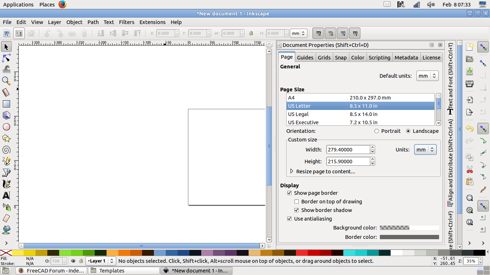
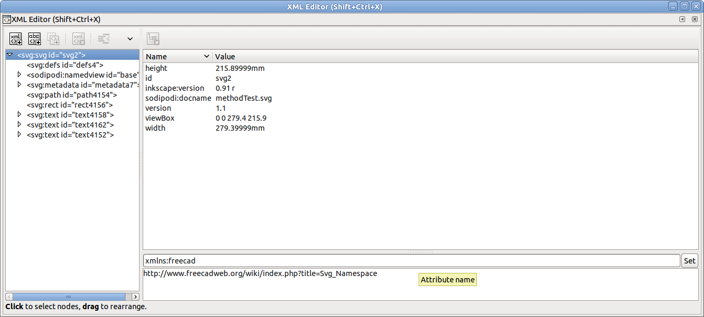
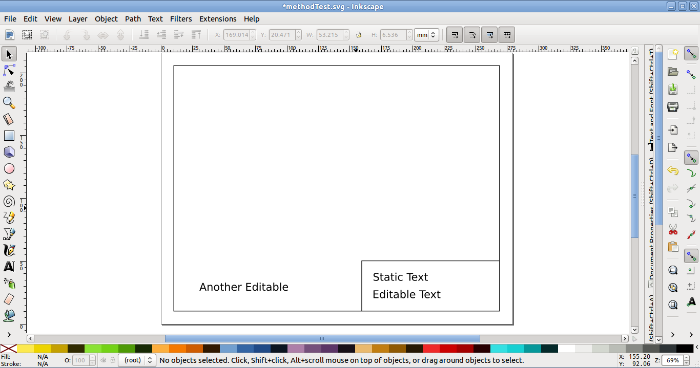
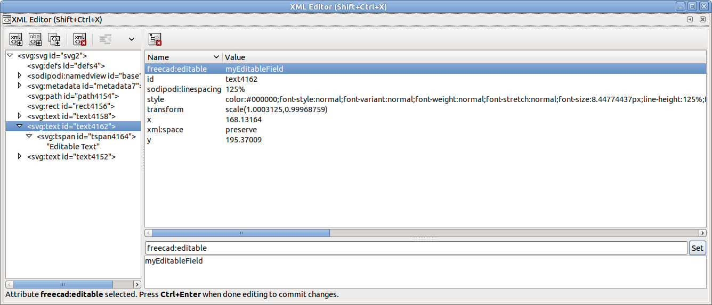
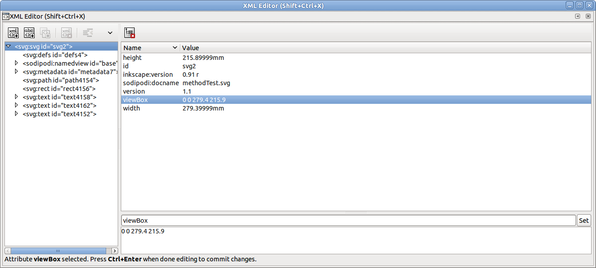
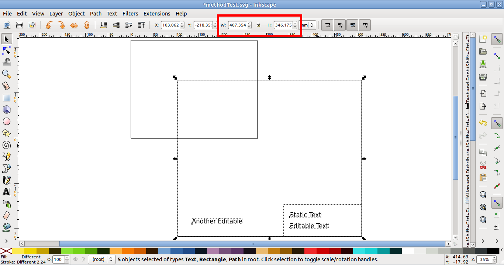

TechDraw TemplateHowTo/es
| Topic |
|---|
| Drafting |
| Level |
| Intermediate |
| Time to complete |
| 60 minutes |
| Authors |
| wandererfan |
| FreeCAD version |
| 0.17 |
| Example files |
| None |
| See also |
| None |
Introduction
This tutorial shows you how to create an SVG file that can be used as the background template for the TechDraw Workbench pages
This tutorial assumes you are moderately familiar with Inkscape and SVG, as well as FreeCAD and the TechDraw Workbench.
We're going to make a simple template for US Letter size paper in landscape orientation.
A copy of the result of this tutorial is available in
$INSTALL_DIR/Mod/TechDraw/Templates/HowToExample.svg
Where $INSTALL_DIR is the directory where FreeCAD was installed, for example
/usr/share/freecad/Mod/TechDraw/Templates/HowToExample.svg
Create base document
1. Open a new document in Inkscape.
2. In Document Properties
- Select page size "US Letter" or "A4" and orientation "landscape".
- Set default units to "mm", and the page size to width "279.4" and height "215.9". For DIN-A4 you would use "210" and "297".
{kind=link}

Inkscape: document with page size and orientation
3. Use the XML Editor to add a "freecad" namespace clause to the <svg> item.
xmlns:freecad="https://www.freecad.org/wiki/index.php?title=Svg_Namespace"
Since SVG is a human readable format you could also enter the line above into the file with a text editor.
{kind=link}

Inkscape: XML Editor adding the "freecad" namespace clause to the <svg> item
Create template drawing
4. Draw outlines, zone numbers, center lines, and other geometry.
5. Draw the boxes and lines for the title block.
6. Add and position your static text.
7. Add and position the text that will be editable.
8. You now have your finished artwork, that should look something like this:
{kind=link}

Inkscape: tentative template layout
Create editable fields
9. Use the XML Editor to add a freecad:editable tag to each editable <text> item.
- Assign a meaningful field name to each editable text.
{kind=link}

Inkscape: XML Editor adding the "freecad:editable" property to the desired <text> item
Adjust size of the SVG
10. Use the XML editor to adjust the viewBox attribute to match your page size in millimeters.
- It is four values, in the format
"0 0 width height"
{kind=link}

Inkscape: XML Editor adjusting the viewbox to match the page size in millimeters
11. Your template will now appear much bigger than desired.
{kind=link}

Inkscape: tentative template layout exceeding the page size
12. We need to shrink it.
- Edit → Select All in All Layers, or box select and select all.
- Adjust the W: and H: spinboxes to match your artwork's size in millimeters.
- Set it to the page size less any applicable margins, for example, W: 250, and H: 200.
13. Use "Align and Distribute" or the X: and Y: spinboxes to position the artwork within the limits of the page if required.
14. Your template should now look right, just like it did in the finished artwork picture above.
Remove transformans on the SVG
15. Ensure that all your editable texts are "ungrouped" with Shift+Ctrl+g.
16. Select everything on your page, Edit → Select All, and then Edit → Copy (Ctrl+c).
17. Then delete the current layer, Layer → Delete Current Layer.
- Note: if you deleted the layer already (in your layer panel is no layer listed) this step is not required. In that case you should select all (Ctrl+a), cut the selection (Ctrl+x) and paste it with the command in the next step.
18. Then paste, Edit → Paste in Place.
- Note: This command prevents that the text positions are stored in transform tags. It's important that you do not use the normal paste command!
19. Your template should now look right and shouldn't have any unwanted transforms.
20. Save your template. When you use Inkscape, save it preferably as Plain SVG because FreeCAD can only handle the features of the SVG 1.1 specification. Plain SVG will remove any Inkscape-specific XML tags.
21. Try it in FreeCAD and TechDraw Workbench with Insert Page using Template.

FreeCAD: finished template with an editable text field being modified
Notes
Don't use Layers in Inkscape until you've mastered template creation without them. Layers and Groups can automatically insert unwanted transforms into your SVG file.
As a final step before using your new template, make sure to remove any transform clauses from the Svg code. Transform clauses will cause problems.
See a Stackoverflow discussion on removing transform clauses in SVG files.
If you do not see the green boxes for your editable texts, there might be something wrong with your document scale. Open your file in Inkscape again and confirm the values of the viewBox and the sizes are matching.
If texts appear offset in FreeCAD, you may need to remove the xml:space="preserve" attributes in the SVG file. See: https://forum.freecad.org/viewtopic.php?t=50897.
- Page: New Page, New Page From Template, Update Template Fields, Redraw Page, Print All Pages, Export Page as SVG, Export Page as DXF
- TechDraw Views: New View, Broken View, Section View, Complex Section View, Detail View, Projection Group, Clip Group, Insert SVG, Bitmap Image, Share View, Project Shape
- Views From Other Workbenches: Active View, Draft View, BIM View, Spreadsheet View
- Dimensions: Dimension, Length Dimension, Horizontal Length Dimension, Vertical Length Dimension, Radius Dimension, Diameter Dimension, Angle Dimension, Angle Dimension From 3 Points, Area Annotation, Horizontal Extent Dimension, Vertical Extent Dimension, Repair Dimension References
- Hatching: Image Hatch, Geometric Hatch
- Symbols: Weld Symbol, Surface Finish Symbol, Hole/Shaft Fit
- Stacking: Stack Top, Stack Bottom, Stack Up, Stack Down
- Attributes/Modifications: Select Line Attributes, Cascade Spacing and Delta Distance, Change Line Attributes, Extend Line, Shorten Line, Toggle View Lock, Position Section View, Align Horizontal Chain Dimensions, Align Vertical Chain Dimensions, Align Oblique Chain Dimensions, Cascade Horizontal Dimensions, Cascade Vertical Dimensions, Cascade Oblique Dimensions, Area Annotation, Arc Length Annotation, Customize Format Label
- Centerlines/Threading: Circle Centerlines, Bolt Circle Centerlines, Cosmetic Thread Hole Side View, Cosmetic Thread Hole Bottom View, Cosmetic Thread Bolt Side View, Cosmetic Thread Bolt Bottom View, Cosmetic Intersection Vertices, Offset Vertex, Cosmetic 1 Point Circle, Cosmetic 2 Point Circle, Cosmetic 3 Point Circle, Cosmetic Arc, Cosmetic Parallel Line, Cosmetic Perpendicular Line
- Format/Organize Dimensions Horizontal Chain Dimension, Vertical Chain Dimension, Oblique Chain Dimension, Horizontal Coordinate Dimension, Vertical Coordinate Dimension, Oblique Coordinate Dimension, Horizontal Chamfer Dimension, Vertical Chamfer Dimension, Arc Length Dimension, Insert '⌀' Prefix, Insert '□' Prefix, Insert 'n×' Prefix, Remove Prefix, Increase Decimal Places, Decrease Decimal Places
- Annotations: Text Annotation, Rich Text Annotation, Balloon Annotation, Axonometric Length Dimension
- Add Lines: Leader Line, Centerline on Face, Centerline Between 2 Lines, Centerline Between 2 Points, Cosmetic Line Through 2 points, Edit Line Appearance, Toggle Edge Visibility
- Add Vertices: Cosmetic Vertex, Midpoint Vertices, Quadrant Vertices
- Miscellaneous: Remove Cosmetic Object
- Additional: Line Groups, Templates, Hatching, Geometric dimensioning and tolerancing, Preferences
- Getting started
- Installation: Download, Windows, Linux, Mac, Additional components, Docker, AppImage, Ubuntu Snap
- Basics: About FreeCAD, Interface, Mouse navigation, Selection methods, Object name, Preferences, Workbenches, Document structure, Properties, Help FreeCAD, Donate
- Help: Tutorials, Video tutorials
- Workbenches: Std Base, Assembly, BIM, CAM, Draft, FEM, Inspection, Material, Mesh, OpenSCAD, Part, PartDesign, Points, Reverse Engineering, Robot, Sketcher, Spreadsheet, Surface, TechDraw, Test Framework
- Hubs: User hub, Power users hub, Developer hub